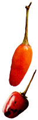

Although most of us grow them as an nuals, pepper plants are actually perennials, and I have found that the following technique works wonderfully to give them a longer life.
Dig up the pepper plant, shake the soil from the roots and trim off all leaves and minor branches, leaving just a few dozen buds on the main stem and secondary branches. The entire plant can then be soaked in water to add root moisture and loosen any insect pests or eggs from the stem. Plant the heavily pruned, bare-root pepper in a loose potting soil and water it thoroughly. Place the pepper in a warm area that re ceives at least 3 hours of full sun (the more, the better.) Prune lightly as needed. When flowers open, spray them with a plant mister or shake them with your fingers to pollinate. Most peppers will produce bountiful fruit indoors as well as the next summer as a mature plant. Wait until daytime temperatures are consistently above 75 degrees before taking the pepper outside in spring. Expect a month for the pepper to adjust to outdoor conditions. After being indoors for several months, the pepper will not be well-adapted to full sun and will need at least partial shade. I think any pepper lover will be happy to see a potted, mature pepper fruiting on the front porch in June.
MATT BARTHEL
Decorah, Iowa
|
 |
|
|